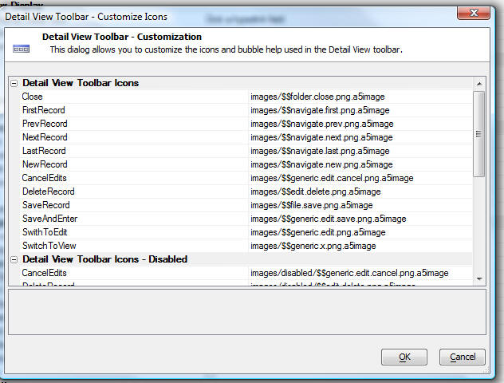

Detail View Toolbar - Customize Icons and Bubble Help
You can customize the icons and bubble help that are displayed in the Detail View toolbar. To bring up the customization dialog, click the smart field in the 'Customize the toolbar icons' property. For some of the icons, you can specify the disabled icon as well.
